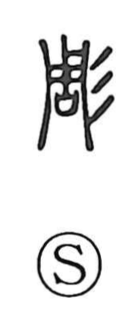

彫

Uncategorized
Kun: horu | On: cho
to carve ・ to engrave ・ sculpture ・ to decorate
Explanation
彫 combines 周, the image of a rectangular shield whose face is divided into four panels filled with incised designs, with 彡, a sign that expresses beauty in color or form. Together they present the beauty of the shield’s carved patterns, and from this vivid picture the character came to mean to carve and to engrave, and by extension to decorate through carving. The older counterpart 雕, originally depicting an eagle, was later used in place of 彫 for the same sense of carving.